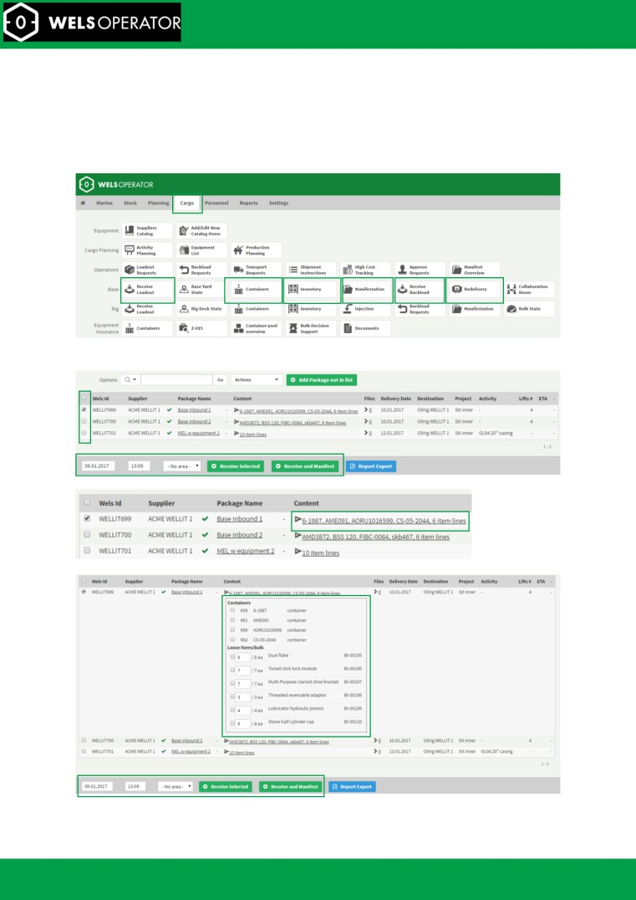
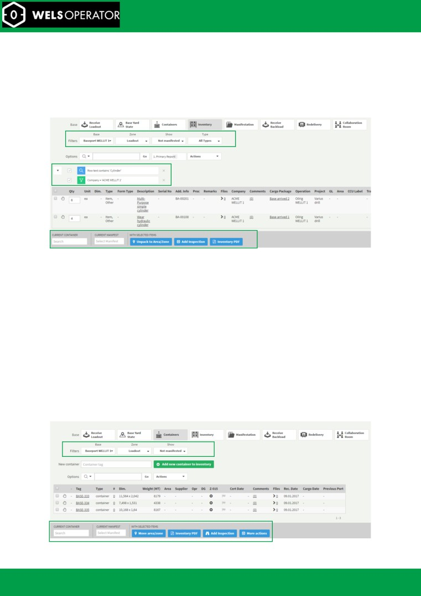
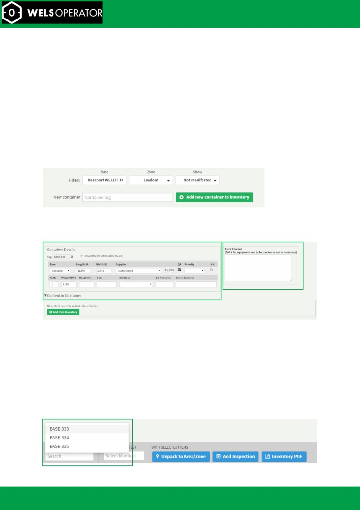
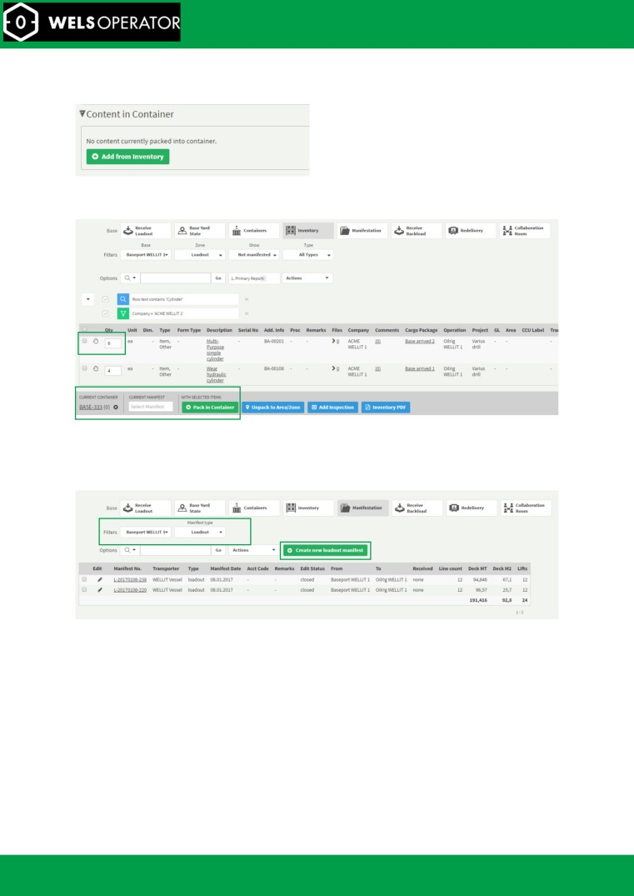
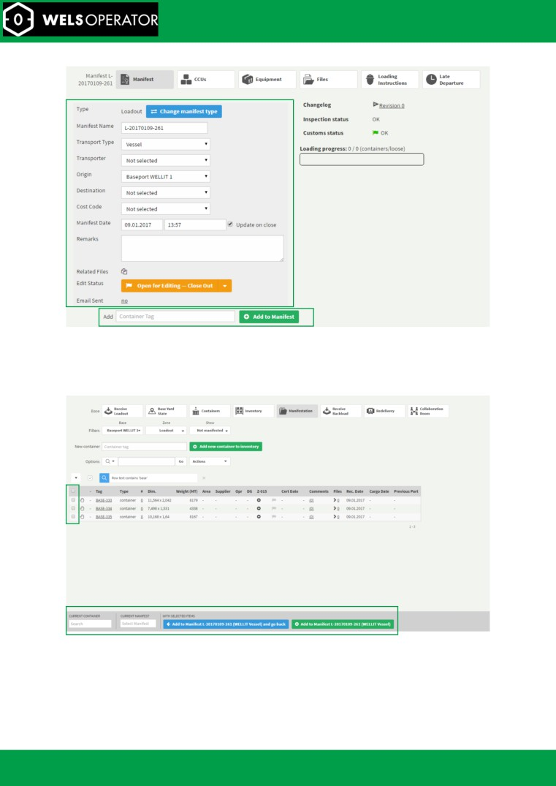
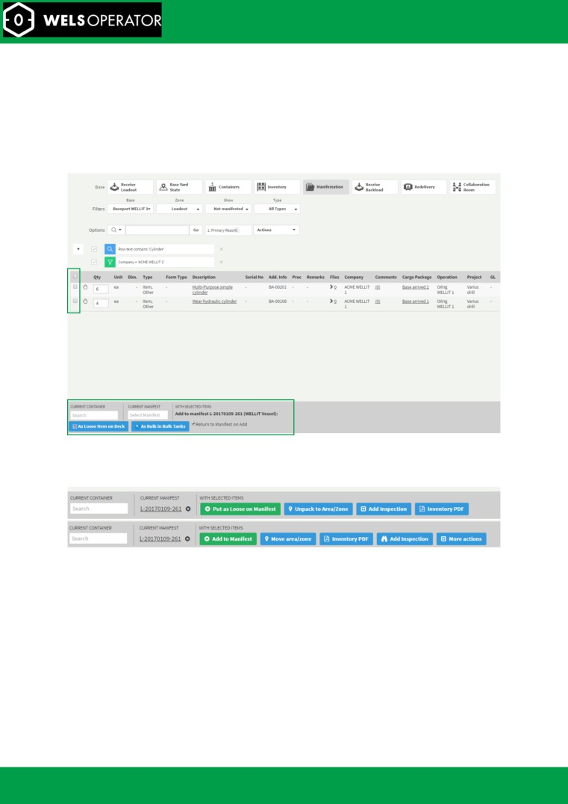
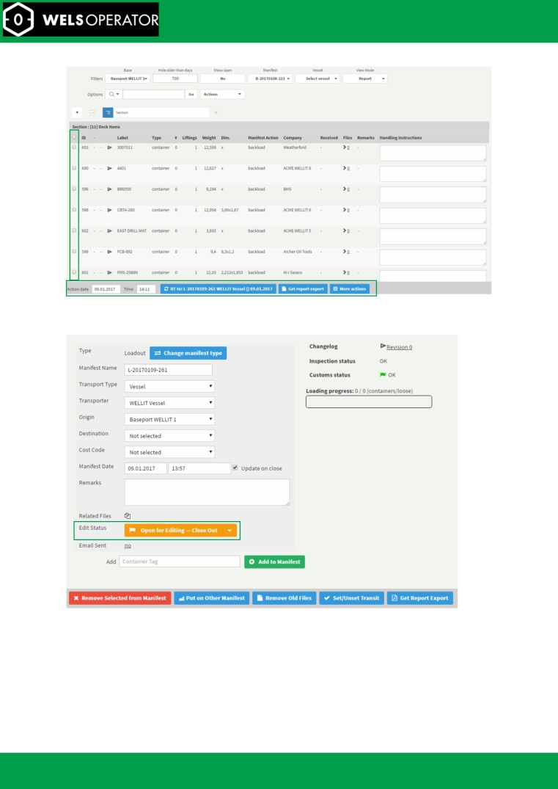
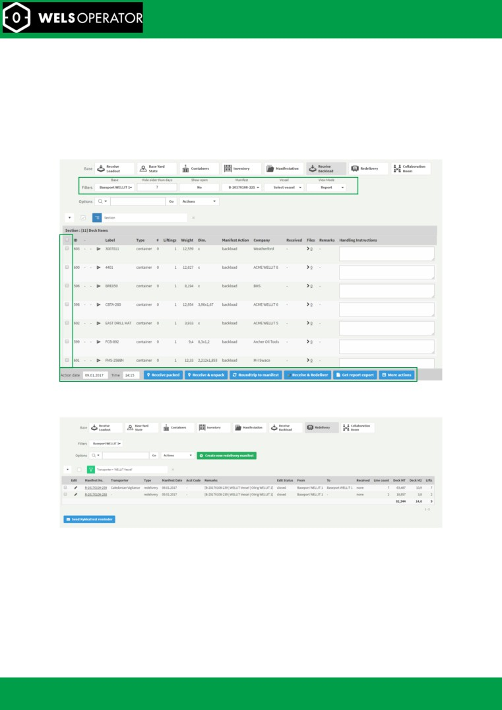
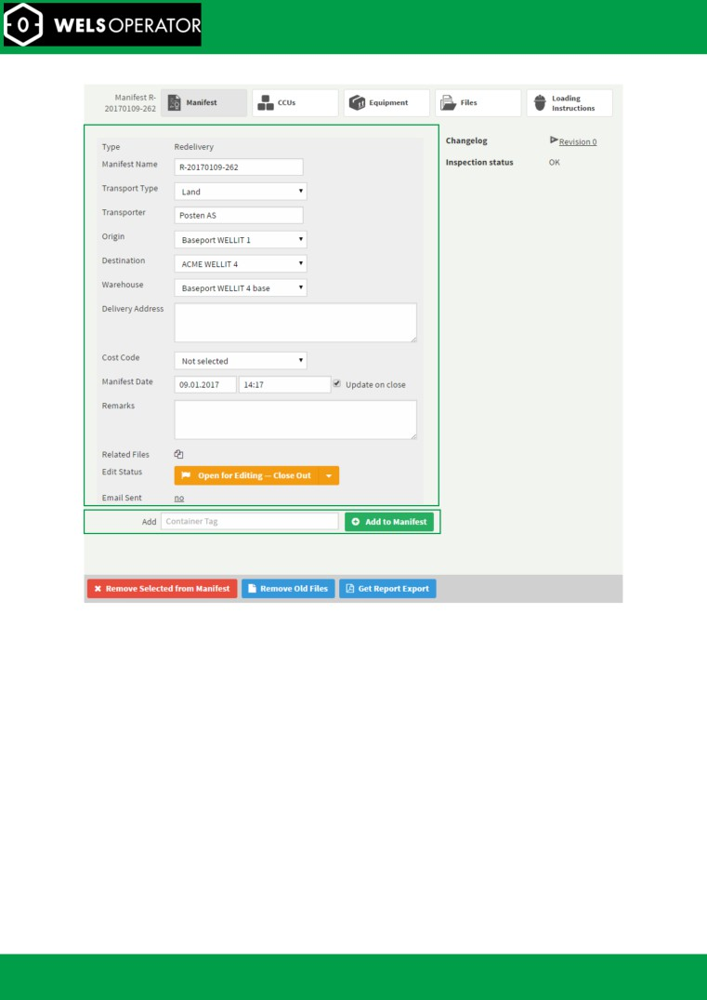

Base Cargo
Workflow
© Wellit AS 2017.01.24
Base Cargo
Workflow
Abstract
By Wellit AS
This document is a step by step guide for base personnel on
how to use the WELS system to receive, handle and
backload equipment.
Wellit Support: +47 400 94 409 | support@wellit.com
Base cargo workflow
Wellit Support: +47 400 94 409 | support@wellit.com
Loadout
3
Step 1: Identify the base section and click the appropriate menu button
3
Step 2: Receive loadout equipment
3
Step 3: Review the base inventory
4
Step 4a: Add containers to inventory
5
Step 4b: Review and edit container information
5
Step 4c: Pack equipment into containers
5
Step 5a: Create loadout manifest
6
Step 5b: Edit manifest details
6
Step 5c: Add containers to manifest
7
Step 5d: Add loose items to manifest
8
Step 5e: Adding equipment and containers by selecting manifest first
8
Step 5f: Add equipment/item/bulk that are not in the Container/Inventory section
8
Step 5g: Add roundtrip items
8
Step 5h: Close out the manifest
9
Backload and Redelivery
10
Step 1: Receive backload
10
Step 2a: Create Redelivery manifest
10
Step 2b: Add equipment and containers to manifest
10
Base cargo workflow
Wellit Support: +47 400 94 409 | support@wellit.com

Loadout
The following chapter will describe the Loadout cargo workflow in an onshore base.
Step 1: Identify the base section and click the appropriate menu button
Click the Cargo tab and select the appropriate menu item. The ones highlighted will be explained in
this document.
Step 2: Receive loadout equipment
Mark a complete package as received by clicking to the far left of the line:
To receive parts of a loadout package, first expand its content:
and select the parts (containers or loose items) of the package to receive:
Base cargo workflow
Wellit Support: +47 400 94 409 | support@wellit.com

Step 3: Review the base inventory
The equipment received from cargo packages or backload will be shown in the container section for
containers and in the inventory section for equipment, which can be reviewed by clicking the
'Container' or 'Inventory' button.
In the equipment inventory, click the description field of each item to review its tracking history. Click
on a column header to either filter or group by specific column values.
Filter to select view
The current filter. Click the “X” to remove
Actions to be performed on items
There are several zones which groups equipment together:
Loadout - shows all items that are available on base for loadout (those items not in the
backload or the parked areas). Equipment can be moved to backload or parked area, packed
in a container or put as loose on manifest.
Backload - View equipment in the backload area that will either be moved to loadout again
or redelivered. Equipment can be redelivered or moved to loadout again as a new cargo
package.
Parked - Equipment that has been removed from the inventory until a decision is made on
what to do with it. Equipment can be removed from the parked area and be put back into
the loadout/backload inventory.
Modifications - Modification packages in which items can be assembled into a new item,
split or merged among other actions.
Temp Storage - Equipment in temp storage can be moved to backload/loadout area when
needed.
Containers that have been received from cargo packages as loadout or from backload manifests are
automatically added to their respective inventories and can be viewed by clicking on the 'Containers'
button.
Filter to select view
Container actions
Base cargo workflow
Wellit Support: +47 400 94 409 | support@wellit.com

The container inventory has some of the same zones as the item inventory:
Loadout containers - Containers in the loadout zone can be removed from the inventory,
transferred to an open manifest, redelivered or merged with duplicate containers.
Backload - Containers that are in the backload area. Containers can be removed from the
inventory, redelivered, transferred with its equipment to loadout as a new cargo package or
merged with duplicate containers.
Temp Storage - Containers that have been put in the temp storage area.
To view or edit more details on a container or pack equipment into it, click on the container tag
name to open a new window.
Step 4a: Add containers to inventory
If you want to add a new container that is not in the container inventory, enter the tag into the 'New
container' input field and click 'Add new container to inventory'.
Step 4b: Review and edit container information
The container that has been selected or added as new to the inventory will appear in the section
below. If length and width is not automatically added, these properties can be entered directly,
together with additional container information.
The left area is the general container information such as length, width, supplier, DG info and seal.
The right area is used to add extra content not available in the inventory.
Please note: Adding Extra Content description should only be done if the equipment is not found as a
part of the inventory (has not been loaded out). The text itself will not be tracked, thus the system
will not calculate rental days or update equipment quantities from inventory if this has been added
as text in this section.
Step 4c: Pack equipment into containers
Equipment that has been received as loose equipment or in pallets or boxes but later packed into
containers must be indicated as such. To do this, first select the container, either by searching for it
on the inventory screen:
Base cargo workflow
Wellit Support: +47 400 94 409 | support@wellit.com

Or by clicking 'Add from inventory' on the container details popup:
Once this is selected, a list of available equipment is shown. This list can be queried by text, and each
column can be filtered by clicking on the title text:
Check the checkbox and enter desired quantity before clicking 'Pack in Container'.
Step 5a: Create loadout manifest
To create a manifest, click the manifest section. A report with existing manifest will appear and the
option to edit or create a new manifest.
Select origin and manifest type
Step 5b: Edit manifest details
Edit the manifest details setting vessel, origin, destination and manifest date.
Base cargo workflow
Wellit Support: +47 400 94 409 | support@wellit.com

Step 5c: Add containers to manifest
Clicking the 'Add to Manifest' a region with different option for adding container or equipment.
When clicking 'Containers' a page will open and display all the containers that are in the loadout zone
in the container section. Select the container(s) to add to the manifest and click the 'Add' button.
Base cargo workflow
Wellit Support: +47 400 94 409 | support@wellit.com

Step 5d: Add loose items to manifest
Clicking 'Equipment' will take you to the inventory section. The procedure is the same as in step 5c.
Step 5e: Adding equipment and containers by selecting manifest first
Similarly, to selecting a container in the bottom bar, it is possible to select a manifest.
This can be done on both inventory and container pages. When a manifest is selected items and
containers can be added by clicking the 'Put as Loose on Manifest' or 'Add to Manifest' buttons.
Step 5f: Add equipment/item/bulk that are not in the Container/Inventory section
Clicking 'Add as container', 'Add as Ad Hoc loose deck item' or 'Add as Ad Hoc Bulk' will create a new
loose item on the manifest.
Step 5g: Add roundtrip items
Clicking the 'Add roundtrip items' button will open a page where you can select a manifest of which
to transfer containers from. This will automatically add the equipment and containers as roundtrip
on the manifest.
Base cargo workflow
Wellit Support: +47 400 94 409 | support@wellit.com

It is also possible to add roundtrip from the Backload section.
Step 5h: Close out the manifest
When the manifest is finished, click the edit status button to change its status to Closed:
The manifest can be viewed as a PDF by clicking the 'Get report export'.
Base cargo workflow
Wellit Support: +47 400 94 409 | support@wellit.com

Backload and Redelivery
The following chapter will describe the Backload and Redelivery cargo workflow in an onshore base.
Step 1: Receive backload
Select the manifest to receive backload from, click the containers or items/bulk to receive from and
click 'Receive selected'. The equipment will be automatically moved onto the backload section of the
base inventory when received as backload.
Clicking 'Roundtrip to manifest' will show the open manifest. When clicking 'Receive & Redeliver'
there are the option to put on existing redelivery manifest or creating a new manifest.
Step 2a: Create Redelivery manifest
To redeliver items on a delivery manifest, go to the redelivery page and create a new one or
edit/view an existing redelivery manifest.
Step 2b: Add equipment and containers to manifest
The information for editing a redelivery manifest is very similar to Step 5 for vessel manifest.
Base cargo workflow
Wellit Support: +47 400 94 409 | support@wellit.com

Alternatively, you can add items or containers directly from the inventory section. Go into containers
or equipment list and choose 'In Backload Area'. Select the items to redeliver and click on 'Mark as
redelivered'.
You will receive an option to either mark items as redelivered without using a manifest or put them
on a new or open manifest. In either case this will remove the items from the base inventory and
complete the tracking log
Base cargo workflow
Wellit Support: +47 400 94 409 | support@wellit.com